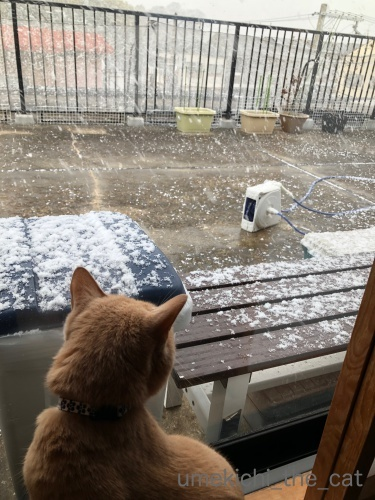
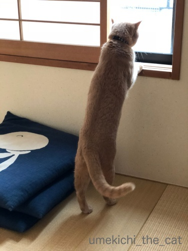
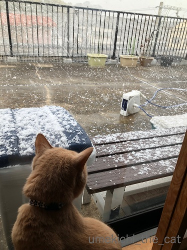
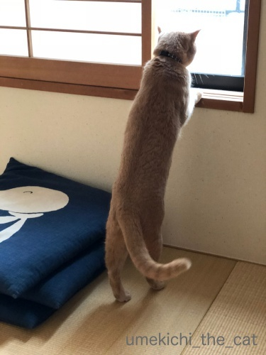

雪を見たかい？ [梅吉]
先週26日金曜日、ほんの30分ほどですが我が家付近では
隣のお家もはっきり見えないくらいの雪が降りました。
大阪に住んで６年、こんなに吹雪いたのは初めてです。

大阪生まれの梅吉。初めて見る吹雪に興味津々。
22秒の動画です。

![[猫]](https://blog.ss-blog.jp/_images_e/101.gif) おかーさん あのしろいのは なんやー！！
おかーさん あのしろいのは なんやー！！

そんなに伸びる程雪に興味が？と思ったらすずめが来ていたようです。
この窓の外に梅吉のネコ草の鉢がいくつかあるのですが
そのタネを狙ってすずめが集まっていたのです。
この時期食べるものがなくて苦労しているんでしょうね・・・
だからと言ってネコ草のタネを掘り返すのはやめてー！！
（寒いのでなかなか発芽しなくて苦労しているんですw）

鳩が集まるようになったのでしばらく中断していたお米のお振る舞い
すずめのために時々することにしましたよ。
初めは二羽だったのが増えている・・・
そして今朝はまた倍に(^▽^;)
すずめの情報伝達能力ってすごいです！
 ↑ガブッと一押し↑
↑ガブッと一押し↑
隣のお家もはっきり見えないくらいの雪が降りました。
大阪に住んで６年、こんなに吹雪いたのは初めてです。

大阪生まれの梅吉。初めて見る吹雪に興味津々。
22秒の動画です。


そんなに伸びる程雪に興味が？と思ったらすずめが来ていたようです。
この窓の外に梅吉のネコ草の鉢がいくつかあるのですが
そのタネを狙ってすずめが集まっていたのです。
この時期食べるものがなくて苦労しているんでしょうね・・・
だからと言ってネコ草のタネを掘り返すのはやめてー！！
（寒いのでなかなか発芽しなくて苦労しているんですw）

鳩が集まるようになったのでしばらく中断していたお米のお振る舞い
すずめのために時々することにしましたよ。
初めは二羽だったのが増えている・・・
そして今朝はまた倍に(^▽^;)
すずめの情報伝達能力ってすごいです！

カフェオレ色の梅吉

梅吉 2023年8月10日 永眠


梅吉と出会った譲渡会

犬猫の理由なき殺処分ゼロ
妄想広告
UMEKICHI 光

爆発的に早い！
時々攻撃的！
Thanks to Mr.Boss365
爆発的に早い！
時々攻撃的！
Thanks to Mr.Boss365

梅吉さん。ビシバシ降り積もる雪にヒートアップ!?ｗｗ
左から右へ、お首フリフリするのが、かわいいねぇ。
コロコロと雪が舞い転がるのも、猫ゴコロをくすぐるのかな。
初めての体験は、いつでも新鮮だね～(^-^)
スズメさん。電線の上じゃないのに、なぜか一直線にステイｗ
はてさて、今朝は何羽だったのかしらん♪
by morichan (2018-01-29 11:13)
こんにちは
梅吉さんも雪の日はテンション上がりますね・・・♪
by yhiga-siura (2018-01-29 11:37)
動画の梅吉君、警戒しながらも興味津々で見てますね^^
大阪でもけっこう降ったのですね。
こちらは雪の日、あお＆うみをベランダに（抱っこした状態で）出したら
降ってくる雪にビビりまくってました。
雀さんの情報伝達能力、これは凄いですよね！
前にいた会社で、同僚がお弁当の残りをベランダに巻いていたら、
いつの間にやら凄い数の雀が来るようになってましたもん(笑)
彼女が休みの時は、雀さんは可哀相でしたよｗｗ
（わたしは外食派だったので、あげるものがなかった(笑))
by リュカ (2018-01-29 11:50)
最初はオシッポをゆっくり振ってたのに、
途中からはハッと首を振りながらガン見の梅吉さん、
雪を楽しんでますねぇ(^O^)
by ニッキー (2018-01-29 12:57)
アハハ！めっちゃ雪を目で追ってますね。
触ると冷たいとか知らないもんね。
by 響 (2018-01-29 13:17)
雪はひらひらじゃなくてビュンビュン降っていたのですね。これは猫にはたまりません。梅吉さん北海道生まれだったらウィンタースポーツを楽しみまくっていたのでしょうか。
by zombiekong (2018-01-29 16:06)
雪を追う梅吉さんの動きが楽しい～♪
ウチのも初めて見たときは窓に駆け寄り「クカカカカ～ッ」と鳥さんにするみたいな声をだしてました^^;
もう飽きたみたいで先日は知ら～ん顔。カメラ構えて待機していた猫父がっかりでした。
ちぃさん家のベランダ、広いですね～。
これは梅吉さんを出してあげたくなっちゃいますね^^;
by ゆきち (2018-01-29 16:28)
梅吉さん！見てますねぇ～(#^.^#)
伸び～してみている姿も可愛いです♪
by きぃ (2018-01-29 16:40)
梅吉さんの動画だ〜
忙しそうに雪を目で追ってますね。
風も見ているのですね。
スズメを見ている後ろ姿、倍くらい長くなってませんか（笑）
写真だけど、尻尾が楽しげです。
by kiki (2018-01-29 17:12)
梅吉さん、吹雪に興味津々☆見てる、見てる～！
伸びをしてまで？
スズメさんでしたか♪
スズメ、情報伝達しますよねえ。
いぜん外猫のお皿にご飯も混ぜていたら、ご飯粒は結構残るのでそれを目当てにスズメが来るようになり、一時は何十羽も‥食べている最中から２メートルぐらい上でチュンチュンさえずりまくって更に増えるっていう＾＾；
by sana (2018-01-29 18:48)
梅吉さん、雪に興味津々でしょうか？
大阪って結構雪が積もらないですよね(^^)
by ma2ma2 (2018-01-29 19:47)
雪を眺める梅吉さん、
「え？何これ？えっ？えっ？」って感じですね。^^)
スズメを眺める梅吉さん、体の伸び具合がすごい！
この時期、外で暮らす生き物は大変でしょうね。。。
by yes_hama (2018-01-29 21:50)
初めて見る吹雪に梅吉さんは歓喜してるんですね。
もしかしたら、あの白いのは食べれるんじゃないのかと(^^;
違いますね(^^)
by riverwalk (2018-01-29 22:38)
結構大きな粒ですね。
あれがちべたいモノでなければ、ぱふぱふ掴んで遊ばせてあげたいですね^^
すずめ：「あそこの家なーうまいもんあんねんなー」
しかしなにより気になるのは・・・ベランダ広っ！（*´人∀｀*）
by Ja-Kou66 (2018-01-30 00:29)
我が家に集まるスズメさん達も
雑草の種を拾ってるみたいです。
でも、来年の春には・・・＾＾；
by ぽちの輔 (2018-01-30 06:41)
梅吉くん、興味津々！！
ホント！あれはなんや？ってちぃさんのこと見上げていますね(^-^)
家の子たちは、雪にも気づかずぬくぬく過ごしていましたｗ
私も気づかなかった・・・(^-^;
すずめさんどんどん増えていくのかな？お米って生のお米でいいの？
私も撒いてみようかな(≧▽≦)
by emi (2018-01-30 14:52)
雪を見る梅吉君、テニスの観戦かってくらい追えてないですけど。
花よりダンゴ、雪よりスズメなんですね。
ウチにもスズメがたくさんきます。犬がいない隙を狙ってるようで、散歩から帰ってくると、ウチから少し離れた場所から鳥の声がして来て、庭に入った途端スズメがこっち見て一斉に飛び立ちます。ロートせいやーくー♩(ハトじゃないけど
by BillK-ko (2018-01-30 18:00)
雪は新鮮だったのでしょうね。(^_-)-☆。
今年は何時までも雪が融けずに困っております。( 一一)
by 水郷楽人 (2018-01-30 20:17)
すずめの情報伝達能力はインターネット並みでやすね、
by ぼんぼちぼちぼち (2018-01-30 21:55)
先週末は寒かったですね。京都でも降りましたよ。
梅吉くん「なに？」「なに？」って感じで可愛いですね。ってベランダ広っ！( ﾟДﾟ)
スズメさん倍々で増えそうですね(*^。^*)
by palpal (2018-01-31 15:25)
梅吉くん、どんな顔で見ていたんだろう。
表から覗いてみたかったな^m^
しっぽふりふりかわいいですね。
by ふにゃいの (2018-01-31 16:51)
梅吉くん、吹雪に興味津々ですね＾＾
長ーく伸びてる後ろ姿、いいですねぇ～♡
by マーヤ (2018-01-31 21:18)
動画、いいですねー。
おうちで暮らすにゃんこにとって
雪はかなり謎の怪奇現象なのかなー。
そして、今回も伸びると長ーーーいことが
よくわかります（＾_＾）
by よーちゃん (2018-02-01 07:52)
morichanさん＞
シュッ！シュッ！！と動きの早い雪に
首をフリフリの梅吉でした＾＾
積もったらその上にズボッとさせたかったんですが
降るそばからとけちゃいました。残念！
すずめさんはうちのベランダで
お米の味を覚えた子と思われます。
その時躾したのでお行儀良いんですよー（うそw）
yhiga-siuraさん＞
積もった雪の上を歩かせたら面白いだろうなー、と
思っていたのですがそこまで雪は降らず残念でした。
梅吉なら喜んで雪の中を駆け回りそうですw
リュカさん＞
ベランダ、出たかったんだけど道産子も尻込みするほどの
吹雪だったのー！
いつか梅吉にも降る雪を体験させたいわw
すずめは情報伝達も凄いですが時間の感覚もちゃんとありますよね。
会社のベランダ、巻いたら来るじゃなくて
巻くのを待つ、様になっていたのではないでしょうか。
うちのすずめは夕暮れ時に集まります。
窓のそばで作業していると視界に入ってアピールして来るしw
かわいいでしょ＾＾
ニッキーさん＞
風も強かったので四方八方から舞う雪に
「どこみれば ええねん！」と言う感じで首を振ってました＾＾
上から静かに振って来る雪だとこんな風には
興味を示さなかったかもしれません。
響さん＞
いつか積もった雪の中に「すぼっ！」と投げ込んで
反応を見てみたいです＾＾
手と足、フリフリしながら雪を漕ぐのでしょうかー。
（先代猫がそうでした。）
zombiekongさん＞
風もあったのでビュンビュン舞う雪が虫みたいに見えたのかも＾＾
ひらひらしてたら見なかったかもしれませんねー。
梅吉が道産子だったら、雪山にすぼー！（っと投げ込まれる）
雪玉とってこい、などを楽しんでいたと思われます(≧ω≦｡)
ゆきちさん＞
あ、そのうち慣れちゃうんですね・・・
そうですよね、雪国のニャンコはいちいち雪を見ませんものねー。
梅吉のこの動画は最初で最後のものになるもかも。
うちのマンションは階段状になっているのでほぼ一戸分の面積が
我が家のベランダ面積なのでーす。
暖かくなったら炭をおこしてバーベキューも出来るんですよ。
夏場は梅吉のプールも設置してみました＾＾
by ちぃ (2018-02-01 13:33)
きぃさん＞
初めての雪、興味津々でしたよー＾＾
のびーる梅吉は違う生き物の様でしたwww
kikiさん＞
舞う雪、風の動きどちらも気になった様です。
気配を殺して窓に向かうときはなぜか長くなってます。
ほそーくなると相手に見つかりにくい、のでしょうか？
おしっぽは感情が正直に出るんですよ！
寝たふりしてても何か気になることがあるときはおしっぽぶんぶん！
ですから＾＾
もちろんこの時もそうでしたーwww
sanaさん＞
細い雪がビュンビュン舞っていたので
何か生き物みたいに見えたのかもしれませんね＾＾
そうそう！人は人を呼ぶにならってすずめはすずめを呼びますよね。
その騒ぎを聞きつけて（？）鳩がやってきて
更にはカラスまで遠巻きに様子を伺い始めて・・・
今回のお振る舞いはあまり大規模にならないようにしたいですw
ma2ma2さん＞
未だ大阪で積雪は経験したことがありません。
1センチでも積もったら街は大混乱になりそうで・・・
怖い様で見てみたい様な気もします(^▽^;)
yes_hamaさん＞
首が小刻みに動いているので笑っちゃいましたよー＾＾
窓の外をのぞいている後ろ姿はなかなかの伸び具合でしょう？
でももーっと伸びてい時もあるんですよ。
これは８割くらいかな(≧ω≦｡)
この時期は何にもない・・・ですが雪に閉ざされる地域はもっと大変だろうな
と、大阪に来て改めて思いました。
riverwalkさん＞
いえいえ、梅吉のことをよくわかっていらっしゃる！
外に出したら口を開けて空を向きますよ、きっと (^▽^;)
by ちぃ (2018-02-01 16:05)
Ja-Kou66さん＞
あ、ちべたい体験をさせたかったのですが
吹雪の中ベランンダに出る飼い主の根性が足りなくて・・・(^▽^;)
積もっていたら雪の深いところにずぼっと
投げ込んでみたかったです！
うちのマンションは階段状になっているので我が家のベランダ部分は
階下のお家一軒分に相当します。
結構色々出来る多目的スペースって感じです。
暑い時期はここにテント張って寝ようかって話が出たくらいですよ＾＾
（やってませんが・・・）
ぽちの輔さん＞
雑草の種、すずめさんがたくさん食べてくれたとしても
うんPで持ち込む分もたくさんありそうです（爆）
そして雑草は永遠に生えていく・・・
emiさん＞
初めは雪と私の顔を見比べながら目を見開いてたんですよー。
「あれは おかーさんの しわざなんか？」みたいな(^▽^;)
emiさんちはみなさんぬくぬく静かに過ごされていたのね。
ゆっくりした時間が伝わって来る様ですよ＾＾
すずめ、うちは生米を撒いてます。
炊いたお米ももちろん食べるけど虫が寄って来るかなーって思ってw
定期的にあげてると催促されるようになりますよwww
BillK-koさん＞
本当だ！右左あるいは上！！ってどこ飛んでいくかわからない
素人のテニスの観戦っぽいですね(^▽^;)
BillK-koさんちは鳥さん用の給餌台があるんでしたっけ？
チャチャくんはまだ鳥さんと仲良くなっていない様子。
でもそのうち背中に止まられて「参ったな・・・」なんて
事になるかもよー(≧ω≦｡)
by ちぃ (2018-02-01 19:58)
水郷楽人さん＞
寒さが続くので土も硬く凍りついて畑も大変そうです。
その分春になった時の害虫駆除が楽になったりするのでしょうか＾＾
ぼんぼちぼちぼちさん＞
本当にびっくりするぐらい情報が早いですよ！
おしゃべりな上に耳聡いんでしょうか(≧ω≦｡)
palpalさん＞
大阪も寒いけど京都の寒さってちょっと特別なような気がします！
ナノくんきなこちゃんはコタツがあるからぬくぬくかな＾＾
我が家は階段状のマンションなので
ベランダの面積＝下のお家の面積なのです。
掃き掃除が大変なのよー。
ふにゃいのさん＞
ベランダに出て外から写したい！って思いましたよ＾＾
でもあの吹雪の中外に出るのはためらわれちゃいましたw
想像するにビックリまなこを見開いていたんじゃないかと思ってます。
マーヤさん＞
長いでしょー＾＾
（鳥さんが来ている）窓の外を見るときは特に長くなります。
ステルス梅吉？(≧ω≦｡)
よーちゃん＞
雨（お水）はお家の中で見たことあっても
雪は無いですからねー＾＾
あ、氷は大好きなんですけどねw
ベランダにいる鳥さんを覗き見るときは特に長く細くなります。
鳥さんに見つからないように精一杯努力してるんでしょうか。
by ちぃ (2018-02-01 20:55)